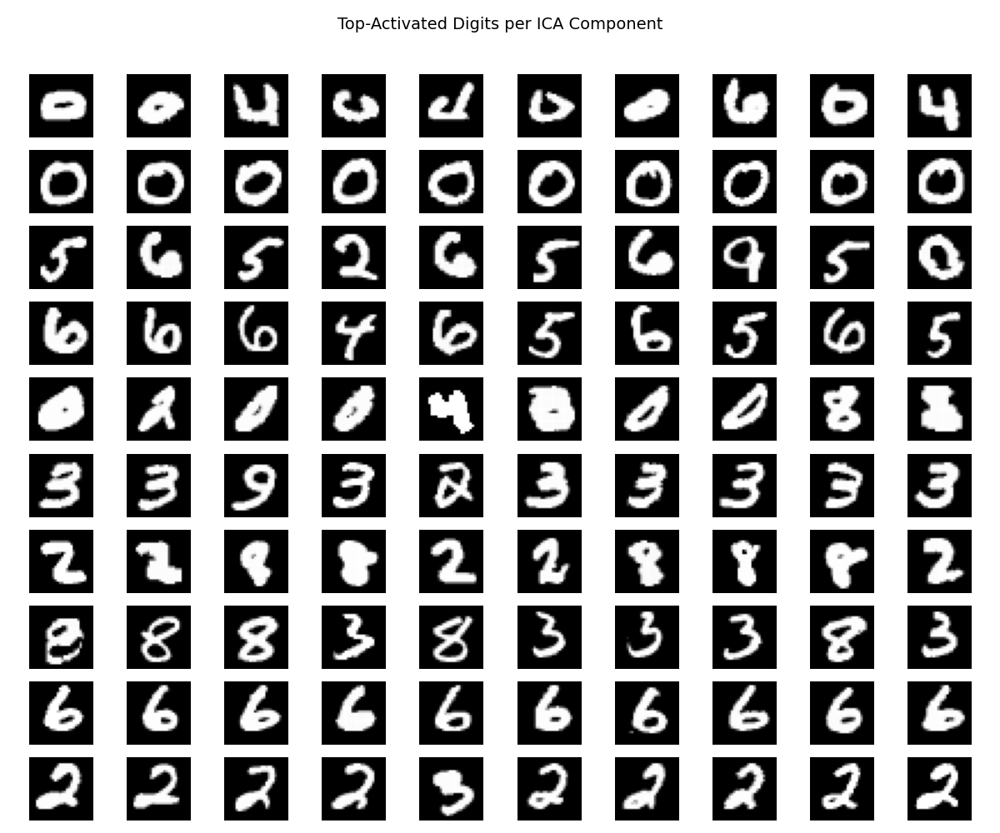
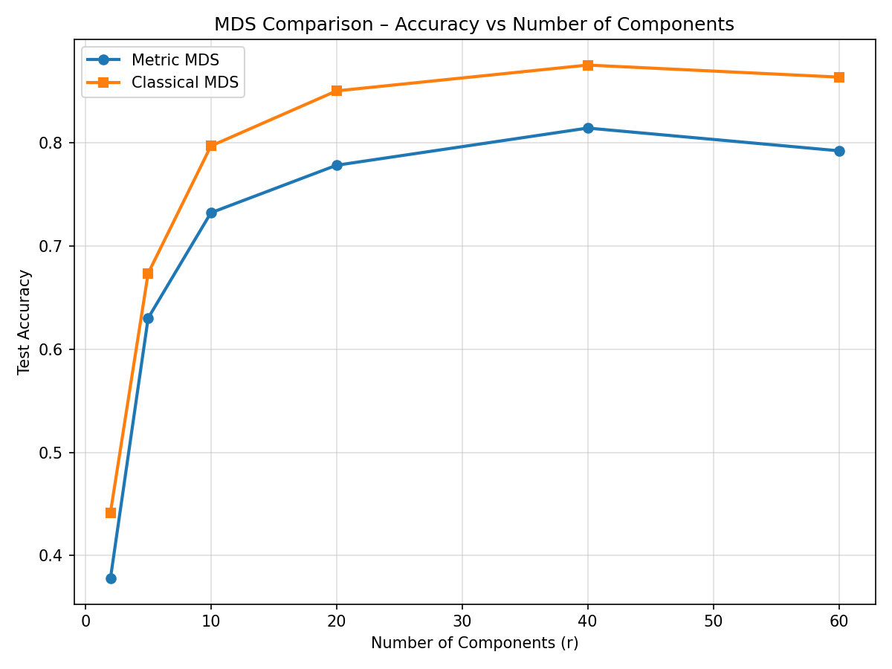
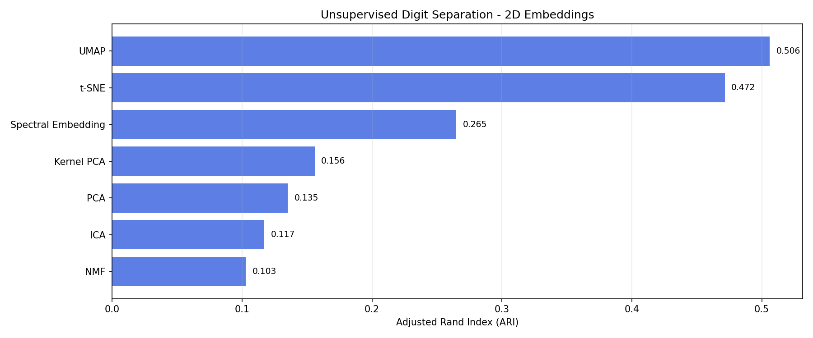

Machine Learning: MNIST Digits
Data Overview
The dataset is readily available within sklearn:
import pandas as pd
from sklearn.datasets import fetch_openml
mnist = fetch_openml("mnist_784")
X, y = mnist.data, mnist.target.astype(int)
X is a dataframe containing 784 features, each representing a pixel in a 28 × 28 image.
There are 70,000 observations (digit images) in the dataset.
Below is a visualization of 25 randomly sampled observations.
(Section A) Linear Dimension Reduction Techniques
This section applies, compares, and contrasts PCA, NMF, and ICA.
Principal Component Analysis (PCA)
Observations
PC1 and PC2 capture latent patterns among digits — some digits (e.g., digit 1) are well separated in this projection.
Interpreting PC1 and PC2 by examining observations along these directions yields the visualization below.

Features
PC2 appears to capture digit thickness — moving from positive to negative PC2, digits become thinner.
PC1 captures a subtler pattern, possibly related to digit slant.

Hyperparameter Tuning
The number of principal components (PCs) cannot exceed the number of original features.
To determine the optimal number of PCs, we can examine the variance explained using a scree plot and apply the “elbow rule,”
or use more quantitative approaches to tune this hyperparameter.
Since labels are available, one practical method is to fit a simple multinomial classifier on progressively larger subsets of the principal components
and track how classification accuracy changes until it stabilizes.
This downstream supervised tuning effectively helps optimize an unsupervised method.
Alternatively, we can evaluate the quality of the reduced representation by comparing how well observations in the reduced space preserve relationships
from the original space, for example using a Jaccard similarity measure.
For PCA, given the analytical closed form, nested, and ordered solution - it makes sense to use supervised optimization.
Below I fit 20 mutlinomial classification models on X projected to 5, 10, 15, ..., 100 PCs and evaluate the accuracy of each iteration to inspect convergence.
 These results indicate that there is a convergence between 40 to 60 PCs - this appears to be the optimal number of components to use when performing PCA on MNIST dataset.
These results indicate that there is a convergence between 40 to 60 PCs - this appears to be the optimal number of components to use when performing PCA on MNIST dataset.
Non-Negative Matrix Factorization (NMF)
Observations
Unlike PCA, NMF components are not ordered or nested, so we cannot interpret them sequentially by importance.
Below, three arbitrary pairs of components are shown side by side to illustrate how different 2D projections capture various digit groupings without a clear hierarchical structure.
Because NMF enforces non-negativity, each component contributes additively to the reconstruction of the digits.
Unlike PCA, which can capture opposing directions of variation through positive and negative loadings, NMF contains no conflicting variance patterns.
This yields more interpretable, part-based components, though at the cost of representing only additive structure in the data.
Ultimately, the clustering tends to be worse for better interpretation of the patterns.
Features
The image below corresponds to the basis components (the H matrix) learned by NMF.
Each component represents a distinct pattern or “building block” that the model has found useful for reconstructing digits.
These can be interpreted as localized parts of digits — for example, strokes, loops, or crossbars — that commonly appear across multiple digits.
The second image shows example digits (observations) that have the highest activation scores for each component, derived from the W matrix.
These highlight which digits rely most heavily on each learned part.
For instance, component 9 appears to capture the crossbar pattern of the digit 4, while other components align more directly with complete digit shapes such as 1, 0, or 7.
Overall, NMF decomposes the data into additive, non-negative parts that together reconstruct the full images.
While some components resemble entire digits rather than localized features, this behavior is typical for NMF applied to structured image data like MNIST—especially when the number of components is small.
The image below shows example digits (observations) that have the highest activation scores for each component, derived from the W matrix.
These highlight which digits rely most heavily on each learned part.
For instance, component 9 appears to capture the crossbar pattern of the digit 4, while other components align more directly with complete digit shapes such as 1, 0, or 7.
Overall, NMF decomposes the data into additive, non-negative parts that together reconstruct the full images.
While some components resemble entire digits rather than localized features, this behavior is typical for NMF applied to structured image data like MNIST—especially when the number of components is small.
Hyperparameter Tuning
Because NMF must be refit from scratch for each number of components, it is considerably more computationally expensive than PCA.
In practice, a coarse grid provides sufficient resolution to identify the accuracy plateau while keeping runtime manageable.
Based on the supervised accuracy curve, convergence appears to occur around 50-70 components.
Although this estimate is approximate due to reduced training size and CPU-only computation, it still provides a reasonable range for selecting the optimal dimensionality.
Using the full dataset would require polynomial time in the number of components k and is not computationally viable on standard hardware in a reasonable time frame.
Independent Component Analysis (ICA)
Observations
Visually, the ICA projection appears similar to the PCA projection, with recognizable clusters corresponding to certain digits such as 0 and 1.
This similarity arises because both methods are linear transformations applied to the same data, and the dominant variance structure in MNIST causes the first ICA components to roughly align with the top principal components.
However, the underlying principles differ: PCA seeks orthogonal directions that explain maximum variance, while ICA identifies statistically independent directions in the data.
Thus, although the scatterplots look comparable, ICA components represent independent pixel intensity sources rather than directions of maximal variance.
Features
The image below corresponds to the independent components learned by ICA.
ICA identifies statistically independent contrast patterns rather than purely additive or variance-maximizing directions.
Each component contains both positive and negative pixel weights that together describe how certain regions of the image brighten while others darken.
These opposing effects capture independent structural contrasts—such as the light outer ring and darker inner region of the digit “0”—that collectively reconstruct the visual patterns present in the dataset.
The image below shows example digits (observations) that have the highest activation magnitudes for each component.
When examining the learned components, Independent Component 2 shows a strong contrast between the inner and outer regions of the digit, corresponding to the circular structure of “0.”
This is reflected in the second row of the activation grid, where the most responsive digits are all zeros, illustrating how this independent contrast pattern is expressed in the data.

Hyperparameter Tuning
ICA runs significantly faster than NMF because its optimization problem is unconstrained and admits an efficient fixed-point solution.
As a result, we can test a more exhaustive grid search.
Again, similarly to PCA and NMF the components tend around 40 to 60 before convergence.
Summary
Across PCA, NMF, and ICA, classification accuracy plateaus between 40 and 60 components.
This consistency reflects the intrinsic dimensionality of the MNIST dataset: although each image has 784 pixels, the true underlying structure of handwritten digits can be described by roughly 50 latent factors capturing shape, curvature, and stroke variations.
Beyond this point, additional components primarily model noise or redundant detail rather than new discriminative information.
Despite differing in formulation - PCA emphasizing variance, NMF enforcing additivity, and ICA seeking independence - all three methods recover a low-dimensional subspace of similar capacity.
To identify the linear dimension reduction technique that best separates the classes while incorporating a supervised downstream validation, I use the Adjusted Rand Index (ARI).
ARI quantifies how well the clusters formed in the reduced feature space align with the true digit labels, adjusted for chance grouping.
A higher ARI value indicates stronger agreement between the unsupervised clustering structure and the known class labels, reflecting better class separability.
Among the three linear dimensionality reduction techniques, PCA is the clear winner.
It achieved the highest Adjusted Rand Index (ARI), indicating the strongest agreement between the unsupervised cluster structure and the true digit labels.
PCA's orthogonal variance-based projection effectively captures the global geometric structure of the MNIST data, producing better digit separation while remaining computationally efficient.
NMF provides more interpretable part-based features, and ICA reveals independent contrast patterns, but both yield lower separability scores compared to PCA.
(Section B) Non-Linear Dimension Reduction Techniques
Kernel PCA
Kernel PCA was applied using an RBF kernel (chosen as it generally performs best for nonlinear structure extraction, so the kernel type itself was not treated as a tunable parameter).
Due to computational constraints, I used a subsample of the MNIST dataset for hyperparameter tuning.
A grid search was conducted over the number of components (r) and the kernel width parameter (γ).
For each combination, I fit a multinomial logistic regression model on the transformed features and recorded the test accuracy.
The heatmap below shows the results of this supervised downstream evaluation, with the optimal parameter setting highlighted.
Next, I refit Kernel PCA using the best-performing γ value, projecting the data into two dimensions for visualization.
This 2D plot is provided purely for qualitative interpretation — the components in Kernel PCA are not nested or variance-ordered,
so the first two components do not necessarily represent the most informative directions in the higher-dimensional feature space.
Spectral Embedding
Spectral Embedding is a graph-based manifold learning method that depends on n_neighbors and n_components.
It generally performs best with a small number of neighbors since it preserves local structure rather than global relationships—similarities can only be meaningfully interpreted within each neighborhood.
Due to computational constraints, a subsample of the MNIST dataset was used for hyperparameter tuning.
A grid search was performed over the number of components and neighbors.
For each combination, a multinomial logistic regression model was fit on the embedded data and evaluated on held-out observations.
The heatmap below displays the resulting test accuracies from this supervised downstream evaluation, with the optimal setting highlighted.
Next, I refit Spectral Embedding using the best-performing n_neighbors value and projected the data into two dimensions for visualization.
When the graph was not fully connected, the next-best neighbor value was used to ensure stable eigen-decomposition.
The resulting embedding below reveals distinct local groupings, with certain digits—such as 6—showing particularly strong separation.
Classical & Metric MDS
The primary hyperparameter tuned for both MDS variants was the number of components (n_components).
Metric MDS proved computationally expensive, taking significantly longer to converge, while Classical MDS—though faster—still achieved stronger downstream classification performance.
The optimal dimensionality appeared to be around 40 components, as indicated by the accuracy trend below.

The 2D visualizations below show that neither MDS variant produced particularly distinct clusters for the MNIST digits,
and the overall fitting process was quite slow.
For this dataset, MDS does not seem well-suited compared to other manifold learning methods.
t-SNE
t-Distributed Stochastic Neighbor Embedding (t-SNE) is a nonlinear manifold learning technique designed primarily for visualization in two or three dimensions.
It models pairwise similarities between points in the high-dimensional space and seeks a low-dimensional embedding that preserves local neighborhood relationships.
Because t-SNE is not intended for high-dimensional projections, n_components was fixed to 2 for all experiments to ensure meaningful and stable embeddings suitable for visual interpretation.
Two key hyperparameters—perplexity and learning_rate—were tuned via grid search.
Perplexity controls the effective number of neighbors considered when constructing local probability distributions: small values emphasize very local structure, while larger values capture more global relationships.
The learning rate determines the step size during optimization; overly small values may collapse clusters, whereas large values can cause divergence or unstable embeddings.
A multinomial logistic regression probe was fit on the resulting embeddings to quantify downstream separability, and accuracy scores were recorded for each hyperparameter combination.
The figure below presents the heatmap of test accuracies across perplexity-learning rate pairs, with the best-performing setting highlighted.
The grid search revealed that t-SNE achieved its highest downstream classification accuracy at a moderate perplexity and learning rate, confirming the method's preference for preserving local neighborhoods over global structure.
This 2d visual using the tuned hyperparameters from the gridsearch above yield an okay visual representation but does not clearly distinguish clusters.
Each class appears to have great seperation.
UMAP
Uniform Manifold Approximation and Projection (UMAP) is a nonlinear manifold learning algorithm that balances the preservation of both local and global structure in data.
Unlike t-SNE, which focuses primarily on local neighborhood preservation, UMAP constructs a weighted graph of nearest neighbors and optimizes a low-dimensional representation that maintains the manifold's overall topology.
For this reason, UMAP can reveal broader structural relationships while still achieving sharp local clustering.
Two key hyperparameters—n_neighbors and min_dist—were tuned via grid search.
The n_neighbors parameter controls the size of the local neighborhood used for manifold approximation; smaller values emphasize fine-grained local structure, while larger values capture more global patterns.
The min_dist parameter determines how tightly UMAP packs points together in the low-dimensional embedding—lower values produce more compact clusters, whereas higher values yield smoother, more diffuse representations.
Each combination was evaluated using a multinomial logistic classification probe trained on the resulting embeddings to measure downstream classification accuracy.
The heatmap below visualizes test accuracies over the (n_neighbors, min_dist) grid, with the optimal configuration highlighted.
UMAP achieved its best downstream accuracy with a neighborhood size of 25 and min_dist of 0.3, striking a balance between local continuity and global manifold preservation.
The 2D embedding visualized below corresponds to the tuned hyperparameters from the grid search.
The result shows well-separated clusters corresponding to different digits.
In a purely unsupervised setting, I find UMAP's 2D representations the most interpretable so far — we see clear grouping of the digits 0, 1, 2, and 6,
along with merged groupings of digits {4, 9, 7} and {3, 8, 5},
which makes intuitive sense since the MNIST hand-drawn digits often exhibit ambiguity between these shapes due to handwriting variation.
Autoencoder
The autoencoder was implemented as a simple two-layer feedforward network with a linear bottleneck layer,
trained to minimize reconstruction error using mean squared loss.
Unlike the previous manifold learning methods, the autoencoder is an explicit reconstruction-based approach
that learns a nonlinear mapping to compress and reconstruct the input data.
Given computational constraints, no hyperparameter tuning was performed—training was limited to 200 epochs on CPU
with a fixed latent dimensionality of two for visualization.
The training curve below shows a rapid decrease in reconstruction loss over the first 50 epochs,
followed by stable convergence near 0.5 MSE, indicating consistent learning and a well-behaved optimization process.
The 2D latent representation learned by the encoder is shown below.
Although the model was not explicitly optimized for class separation,
the visualization reveals some degree of structure in the latent space,
with several digits forming partially distinct clusters.
However, compared to methods like t-SNE or UMAP, the separation is less pronounced,
as the objective focuses purely on reconstruction fidelity rather than neighborhood preservation.
(Part C) Conclusion
Across all dimensionality reduction methods evaluated, the MNIST digit patterns clearly exhibit nonlinear structure.
Linear techniques such as PCA and ICA failed to produce meaningful separability in the low-dimensional space, while nonlinear
manifold learning methods—particularly UMAP and t-SNE—revealed well-defined digit groupings.
Among these, UMAP achieved the best overall performance.
Visually, it produced the most distinct clusters with clear local neighborhood preservation:
digits such as 3, 5, and 8 were grouped closely together due to their shared curvature and shape,
while more isolated digits such as 0 and 1 were mapped far apart.
This demonstrates UMAP’s strong balance between separability and interpretability—it preserves meaningful local
manifold relationships while still maintaining a globally coherent embedding structure.
Quantitatively, this conclusion aligns with the Adjusted Rand Index (ARI) evaluation using
K-means clustering on the 2D embeddings of the tuned models.
UMAP achieved the highest ARI (approx 0.51), followed closely by t-SNE (approx 0.47),
while spectral methods, kernel PCA, and linear techniques lagged far behind.
These results confirm that nonlinear embeddings capture the intrinsic geometry of the MNIST data far more effectively
than linear transformations, making UMAP the most suitable choice for this dataset and for similar high-dimensional
pattern recognition problems.
